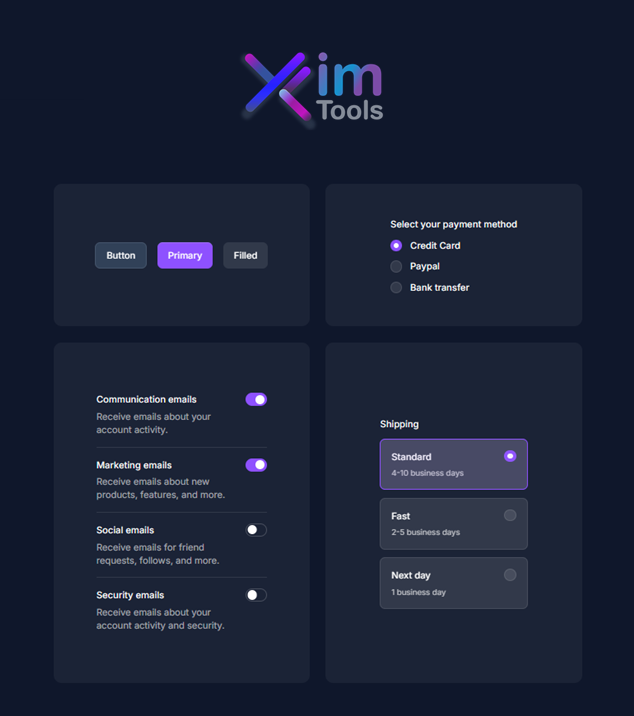
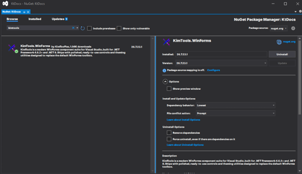

Getting Started
KimTools WinForms
Modern UI Toolkit for { .NET }
Elegant WinForms Controls & Components for .NET (Framework + Core), and beyond, no bloat.
Go to Website
Why KimTools ?
Unlimited Projects
Build as many desktop applications as you need.
Unlimited Activations
Develop across your personal development machines.
Royalty-Free
Deploy applications without runtime royalties.
Visual Designer
Integrated WinForms Designer support and visual editors.
Documentation
Comprehensive guides, API documentation, and examples.
Professional Themes
Modern themes, semantic colors, and SVG icons.
Supported Frameworks
.NET Framework
Supported versions:
- .NET Framework 4.6.2
- .NET Framework 4.7
- .NET Framework 4.7.1
- .NET Framework 4.7.2
- .NET Framework 4.8
- .NET Framework 4.8.1
Modern .NET
Supported versions:
- .NET 8
- .NET 9
- .NET 10 (Preview)
Get Started
Install & Upgrade via NuGet
Package Manager ConsolePackage Manager GUI.NET CLI🔴 🟡 🟢Install-Package KimTools.WinForms
🔴 🟡 🟢dotnet add package KimTools.WinFormsPick your license tier
Get KimTools License
Choose .NET Framework, .NET Core, or PLUS depending on what your project targets.Drop controls onto the designer
KimTools controls appear in your Visual Studio Toolbox like any other WinForms control -no extra setup.